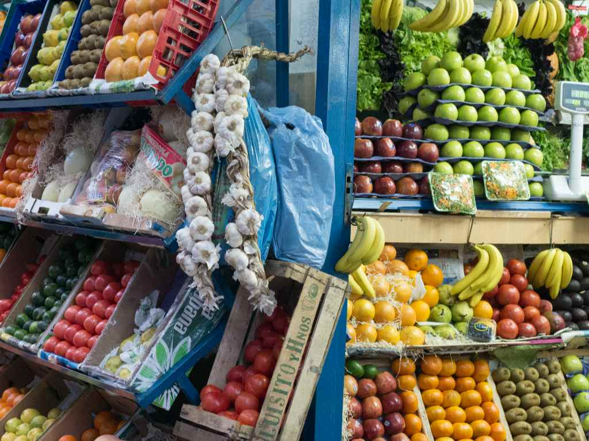
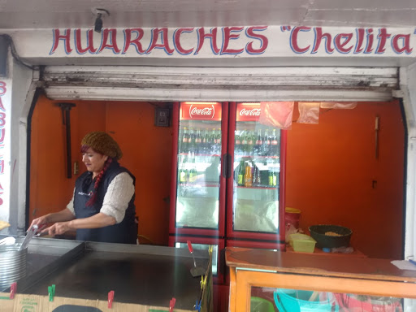
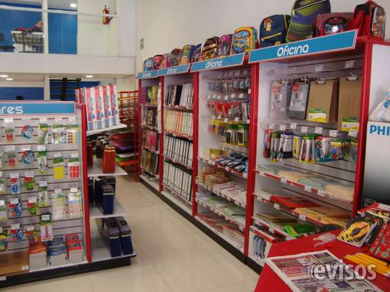
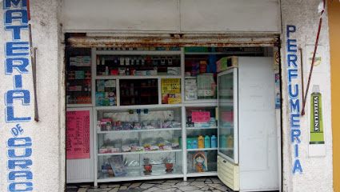
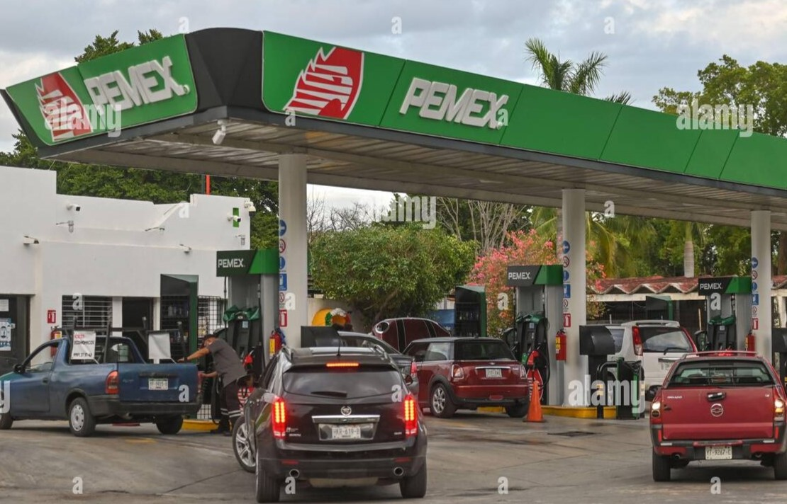

Los diferentes negocios que se encuentran establecidos dentro del municipio de Jaltenco son muy importantes para el bienestar de la población, ya que sin estos el poblador no tendría lugar al cual recurrir para satisfacer sus necesidades
Los distintos negocios que se pueden encontrar dentro del municipio son los siguientes:
▪️ Recauderias
▪️ Locales de comida
▪️ Tienda de abarrotes
▪️ Farmacias
▪️ Gasolineras
Recauderias
Las recauderias son aquellos locales donde podremos encontrar vegetales, algunas frutas y semillas.
Estos negocios son los que se acuden frecuentemente para realizar algunas compras de vegetales, frutas y/o semillas. Este tipo de locales son los más necesitados para la población de Jaltenco.

Locales de comida
Los locales de comida son algunos establecimientos donde se puede ir a comprar comida.
Una parte de la población prefiere comprar comida cuando esta en un espacio laboral, para así mantenerse alimentados y poder rendir en su trabajo, escuela o inclusive en el hogar.
Los espacios de comida son sencillos de encontrar dentro de un municipio pequeño, estos se pueden encontrar dentro de un espacio público en el que suelen recurrir con frecuencia los pobladores.

Tienda de abarrotes
Las tiendas de abarrotes son muy indispensables para la población de Jaltenco, ya que en estos establecimientos se pueden encontrar varios productos para su compra.
En un local así, podemos encontrar embutidos, cremeria, pan de caja, botanas, etc.

Farmacias
Una Farmacia es de suma importancia ya que en estos locales podremos encontrar una gran variedad de medicamentos. Los cuales podemos comprar ya sea sin una receta médica o con receta médica.

Gasolineras
Una gasolinera ubicada en el centro del municipio es muy útil, ya que sin este establecimiento la movilidad en los transportres no se podría generar sin aquel liquido.
